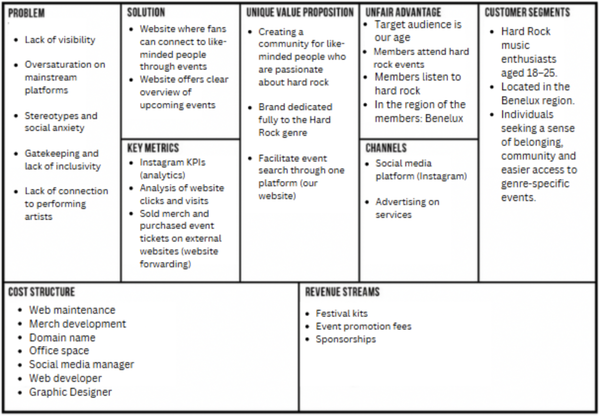
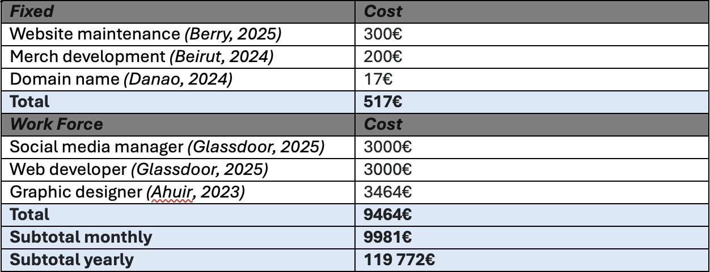

General Information
This branded website is publicly available at https://nidia-m.github.io/PRJ-5-group-1/
This website was created by;
| Name | Student Number |
|---|---|
| Selena de Jong | 235460 |
| Marta Ferreira Nunes | 230225 |
| Nidia Kalkman Mangas | 233513 |
| Lea Gafsou | 225627 |
Content
View content folder here| Name | Content |
|---|---|
| Selena de Jong | Marketing: Context of Campaign and promotional activites, Learning Points, Future Planning, Professionalism, Coding: Corporate, Management , Social Media Management, Social Media Design. |
| Marta Ferreira Nunes | Content, Management , Marketing: context of campaing and promotional activities, Coding: Merch, Social media content, Mockups. |
| Nidia Kalkman Mangas | Main Coding: Homepage, About us, Layout, Visual styles. |
| Lea Gafsou | Management, Content: Persona, Logo, Coding: Events, Social Media Content, Interview Insights, Event Research. |
Brand name

FIRESPHERE- “Sphere" symbolizes a circle, the community of like-minded people. "Fire” symbolizes the dynamic that we want to establish between those people, as well as using a symbol that is usually associated to rock and power.
Our Mission
Firesphere helps hard rock fans easily find events that match their style and connect with a community of like-minded people. By creating a space for shared experiences, we aim to bring fans together, fueling their passion for music and building a thriving rock community.
Our Vision
In a world where hard rock fans struggle to establish connections and personal style events, we believe in making it easy to unite people through music. Only then can we keep the hard rock fire alive and thriving. In a world where hard rock fans struggle to establish connections and personal style events, we believe in making it easy to unite people through music. Only then can we keep the hard rock fire alive and thriving.
Our Values
Bring in your self-expression:
We promote freedom and self-expression by creating a space where hard rock fans can truly be themselves. It’s about celebrating the power of music and expressing who you really are!
Find your community:
We’re building a space where hard rock fans don’t just get easy access to all events but also share experiences and create a culture with like-minded people through these. Our community thrives on passion, unity and the shared passion for hard rock.Help us igniting the fire:
"Ignite": verb. meaning to set something on fire or to cause it to start burning.Persona

Name: Jonathan de Vries
Nationality: Dutch
Age: 21
Gender: Male
Personality type: ISTP (introvert, sensing, thinking, perceiving)
Smells like: Axe: dark temptation (deodorant), Tom Ford Oud Wood (perfume), tabacco, beer,leather, vintage clothing, black coffee, sandalwood, musk
Looks: Long unbrushed hair, black clothing, leather jacket, band tee, vintage clothes, combat boots, tattoos, piercings, studded belts, chains, ripped black jeans, plaid flannel shirts
Is always: listening to hard-rock music, looking for hard-rock vinyls, always walking with a relaxed posture, a bit heavier steps and head banging to the loudest tunes
Lives in: Tilburg, The Netherlands
Current occupation: 3rd year student of Theology at Tiburg University
Loves: hard rock music, hard rock festivals, hard rock concert, travelling, hanging out with close friends, meeting like-minded people who have the same interests, mosh pits, beer, head-banging, heavy guitar riffs, band merchandise, keeping his hair long, rebellion, anti-authority, no-poser mentality
Hates: overproduced generic pop music, mainstream events, posers, big brand fashion using rock symbols, bad crowd etiquette, bands that sell-out, university events full of regular people, social overload, TikTok trends that misinterpret hard rock music.
Jonathan’s true character: Jonathan is an introvert, who struggles to make friends in his day to day life. At his university, he is very quiet, and looks very closed-off. A lot of his university classmates are a little intimidated by him because he looks alternative and hard-rock. But in reality he is a softy on the inside. What Jonathan truly wants is to make more friends that would travel with him throughout The Netherlands, and surrounding countries like Belgium and Luxemburg, to attend events together and geek out on hard-rock music. Jonathan struggles to find these types of events and meet new people. He is hoping his wish can be fulfilled and that he can make friends within the community.
What Jonathan expects to gain from a website like ours: an easy way to find raw and real hard-rock events and concerts, and find a community of like minded fans who will accept him the way he is.
Production
Design Elements
Credits
Testing Report
Marketing
Context of campaign and promotional activities
View marketing folder hereOur campaign will run for a period of four weeks with our sole focus on Instagram. Our goal is to drive traffic to the website by aligning all content and promotion with a call-to-action that leads the users to our website page, creating an easy and consistent user experience, from discovering the brand to visiting the website, where the landing page is specifically designed to reflect the tone, visuals and purpose of our campaign. This way we can maximize engagement and the relevance of our brand.
Our marketing plan is based on both interview findings and web research studies. Based on this, we found that Benelux residents use mostly Facebook and Instagram as main social media platforms. People aged 14 to 22 use WhatsApp and Instagram, which is a big part of our target group. And young audiences, including young rock fans, use mostly TikTok and Instagram.
Based on all these insights from web research, we understood Instagram is the common platform between all these groups, making it the best platform choice to target our audience.
As our campaign lifts off, our goal is for our target audience to get familiar with our brand and feel more comfortable within the hard rock scene. We want them to connect with the community, and once familiar, to feel more motivated to attend events. Our campaign will act as a facilitator between silent supporters (fans who hold back when wanting to participate in such events) and the hard rock community.
Message: Bringing hard rock fans together through events. Our platform facilitates connecting passionate like-minded people through unforgettable experiences.
Reach Objective: By the first week, we aim to reach 100 people to view our page and continuously do so each week. Succes will be measured by checking the analytics on Instagram and website reach/engagement through clicks and searches.
Affect Objective: After reaching these people, we want our audience to feel more motivated to attend hard rock events, as well as feel a sense of community in between the hard rock scene. Success will be measured through engagement and comments.
Response Objective: For our social media we will reach 100 followers and an average of 20 likes per post after two weeks and a CTR of 11 percent for our website (WordStream, 2024). This success will be measured by checking the analytics on Instagram and KPI’s. We will mainly use analytics from Instagram, because this is an easy way to get insights for free by having a professional account, giving us information about reach, views, likes, and engagement.
Tactics and Strategy: Our 4-week promotional campaign on Instagram consisted of 2 posts a week with 2 consistent stories posts as well. We mainly focused on:
- Interactive stories consisting of quizzes and games. Interactive elements are great at increasing engagement on Instagram stories. Any sort of Instagram story that features a poll, slider, quiz, or other call-to-action gets your audience to actually engage with your content (Giuliani, 2025).
- Brand introduction. We wanted our audience to have a clear understanding of who we are and what we offer. By establishing that base they can feel more inclined to return to our platform and we can build a connection and trust with them.
- Event-focused push. Our website is a platform where hard rockers can meet like-minded fans through events. This is incorporated on our social media as well. It focusses on announcing and promoting the rock events also available on our website. This way we can reach more people and create more brand awareness. As well as increase excitement towards the events and encourage people to make new connections with both hard rock music and the community.
We post on weekdays because research on over 2 million posts showed that the days with the most reach were weekdays, between 3PM and 6PM with Mondays and Fridays in particular (Best Time to Post on Instagram in 2025 — New Data, n.d.). This is why we announce events on Monday and post reels on Fridays to improve audience engagements, overall user friendliness, and our brand. Head of Instagram Adam Mosseri has advised users to publish about two feed posts per week and a couple of stories each day. He stated regular feed posts are important for connecting with your audience, but stories are even more critical for keeping your business top of mind (How to Determine Your Ideal Instagram Posting Frequency, 2023). This is why we post both regular posts and stories twice a week.
Our focus is on posting carousel posts to create awareness and interest, and post reels and stories to push engagement. Reels are known to capture user attention more affectively due to their fast-paced nature, generating more likes, comments, shares, and saves. Statistics indicated that Instagram Reels have an average reach rate of 30.81%, outperforming carousels at 14.45% and images at 13.14%. Instagram Reels are shown to be the most effective in reaching your audience and are a strategic move to enhance your brand’s visibility and overall engagement on Instagram (Chaves, 2025d). Therefore, we chose to implement reels in our marketing strategy. Besides this, Research showed that out of 500 million people on Instagram, creating and watching stories, one in three people has said to become more interested in brands and products after seeing stories about brands featuring those products. Meaning IG Stories boost a brand’s reach and engagement. Social media campaigns see about a 20% increase in reach when Instagram Stories are involved as well (Instagram Stories: The Complete Guide to Using IG Stories to Boost Engagement + Reach, n.d.-f). Stories and Reels are therefore showing to be the most effective in marketing campaigns facilitated on Instagram and we will implement this in ours as well.
Content Calendar
Week 1:
Week 2:

Week 3:

Week 4:

Learning Points
Overall, we were rather pleased with the process and results of our campaign. Our objectives and tactics have always remained the centre point of our campaign. The interactive stories were a nice alternative to keep our audience engaged and interested in what our brand had to offer. In these four weeks, our stories reeled in an average of 53.5% of our total views (3242), whereas reels consisted of 29.1% and the posts of 17.4%. Between reels and posts, our reels conducted the most views. The reel with the most views being that of our first post, reaching 557 views, whilst our posts never received more than 200 views. This was something we had already expected at the beginning of our campaign due to earlier done research. In total we reached 380 accounts and had 111 interactions (likes, comments, story responses). For posts we used captions and hashtags that aligned with our brand and served to expand our reach even further. In the future we would definitely put more focus on posting content in reels format to reach more accounts and stay consistent with the posting of stories. Given that these received the most engagement they are strategic tools we should not astray from. Our event focused and about brand posts received positive feedback although they didn’t generate as much views and interactions as we had initially expected. Out of all our posts, the meet the team carousel post did receive the most likes. As our account would grow in the future, we would continuously research what events would be most interesting to our target audience and play into their emotional drivers (such as fear of missing out and nostalgia) when generating content.

However, because of our rapid increase in views and interactions in the first week, we had anticipated to have reached at least 100 followers by the end of the second week but could not attain to that. We realised our content was mostly being viewed and interacted with by our own followers (17.1% of the views and 9% of interactions consisted of non-followers).
Week by week breakdown
Week 1:
We started off our campaign with fairly low expectations, only expecting a maximum of 100 views in the first week. The analytics showed that we quickly exceeded our expectations, and to our surprise we reached up until 1207 views instead. Our posts together generated a total of 711 views in total.
Week 2:
Because of our great success in the first week, our expectations of week 2 raised as well. We anticipated our account to reach 100 followers and a total of 1500 views by the end of the week. However, this was not the case. We unfortunately only generated 576 views that week and our profile activity dropped by 59.6%. Our posts together received 394 views.

Week 3:
Week 2’s setback made us rethink our objectives for this week, so we settled with an anticipation of 600 views and 70 followers by the end of week 3. To our surprise once again, we generated a total of 1103 views and our profile activity increased with 5.4%. Our posts received 411 views. We observed that this sudden spike in views was due to the posting of our reel that Friday.

Week 4:
Our analysis of week four will only be documented up until Tuesday April 15th, hitting our 4-week mark. In those two days we were able to post 1 carousel post and 1 story series. We found our reach each week to variate a lot but wanted for our last week to generate at least 1500 views and 80 followers. Analytics showed that we received 301 views in those 2 days. We don’t have the full analytics of the entire week, but this means our reel and second story post would have to gain 1200 views in total to reach our goal. Although this isn’t entirely impossible due to reels generating the most success for us the past weeks and reaching more accounts, but it would have to go more viral than our previous reels have done.
Future Planning
What worked well
Before we actively started our campaign, we actively researched what strategies would be effective on Instagram. Observing our analytics for the past weeks has made us realise our research was solid.
One of those strategies turned out to be the consistent posting of stories. The content posted on stories were the ones that got viewed the most (61.3%). This approach increased our visibility as the stories would appear at the top of the users’ feed and it strengthened their engagement with our brand by interacting with our quizzes. Research shows that Instagram Stories boost your reach and engagement and social media campaigns on Instagram see about a 20% increase in reach when Instagram Stories are involved on average (Instagram Stories: The Complete Guide to Using IG Stories to Boost Engagement + Reach, n.d.-e). Because of this we realised that stories are a must when it comes to our campaign, especially in the future when we’re planning to hold giveaways and gain collaborations with said events. We can promote this on our stories and increase interest and participation rates. There are currently over 500 million people creating and watching Instagram Stories every day, of which one in three people has said they become more interested in brands and products after seeing stories about those brands that feature those products (Instagram Stories: The Complete Guide to Using IG Stories to Boost Engagement + Reach, n.d.-e).
Besides this, our reels also performed very well. Out of all posts, reels were the one that generated the most views. This approach helped us expand our reach and exposure of our account as it was more likely to show up on people’s timelines (the more views and interactions, the more your content gets boosted onto people’s timeline). Recent Instagram Reel statistics data indicates that IG Reels have an average reach rate of 30.81%, significantly outperforming carousels at 14.45% and images at 13.14%. This means Instagram Reels are twice as effective as carousels and images in reaching your audience. Incorporating Instagram Reels into your content is a strategic move to enhance your brand’s visibility and overall engagement on the social media platform (Chaves, 2025c). In future campaigns we will use this tool to promote our events and collaborations, as well as helping fans connect with the hard rock community through our content.
Future Recommendations
If our campaign would continue to run after these 4 weeks we would approach it a bit differently.
First and foremost, the content we have posted on Instagram Stories thus far have been interactive ones consisting of quizzes, fun facts, games, etc. In the future we would like to continue doing this, but not solely that for Stories. Instagram Stories can be used in way more effective ways, such as promoting our product and planned collaborations, or reposting other existing videos on Instagram to extend the community feeling.
Besides this, we would want to invest in collaborations with event venues and artists. At Firesphere our main goal is to bring hard rock fans together through music; by collaborating with those venues and artists we can do just that. With these collaborations we can reach more fans, build our brand’s credibility, create more hype around the events and drive traffic to our platform.
Process Improvements
Reflecting on our campaign we realise there are still areas that could use improvement, and when practised properly, we could even use it to our advantage. Such as diving deeper into our consumer’s behavior, by for example; holding more detailed interviews, doing greater research and using our platform to get in contact with our target audience. Right now, our posts are still very general, but in the future, we could make these more personal so we can generate more audience engagement and a better sense of community.
Professionalism
Week 1:
In the first week we focussed on introducing our brand and what we offer our audiences to give them a clear vision and build trust. We expected that these types of posts wouldn’t immediately generate lots of interactions, but we believe it's important for our audience to understand the context of our platform.
Posts:

Stories:

Week 2:
The second week we focussed on community building and engagement. We wanted to introduce our team so that it would humanize our brand and build a connection with our audience. Besides this we posted our first event announcement, showing the audience what to expect from us.
Posts:

Stories:
Week 3:
In week 3 we posted an event focused post, introducing an event and making it more appealing for the audience. This way we want people to feel encouraged to go to events and meet new artists and fans. We also posted a reel explaining our brand’s purpose and value once more so people could visualize the solution our platform brings.
Posts:

Stories:

Week 4:
Now that our campaign has set off its feet, week 4 was all about transitioning and posting the content we would post on a regular even after this 4-week marketing campaign ends. Meaning our posts worked to promote events and spark interest amongst fans, both active and silent listeners, and encourage them to engage with the community.
Posts:
Stories:

Management
View management folder hereLean Canvas
Problem
From our interviews, we gathered several key insights:
- Lack of visibility: It’s really difficult to find hard rock-specific events. There’s barely any promotion, and fans often have to actively dig around to discover what's happening.
- Oversaturation on mainstream platforms: Sites like Ticketmaster do promote "hard-rock events," but they put everything under the broader rock genre. There’s no clear distinction for hard rock, and the sheer number of events listed can be overwhelming and unfocused.
- Stereotypes and social anxiety: One interviewee shared that she avoids hard rock events because she associates them with the stereotypical “sweat, beer, and screaming people.” As an introvert, that environment feels overwhelming, especially when the crowd or community you’re walking into is unknown.
- Gatekeeping and lack of inclusivity: Another person noted that while the community is often welcoming, there's still a presence of older male fans who gatekeep and make younger, more feminine-presenting women feel like they don’t belong. She’s experienced this exclusion firsthand at shows.
- Lack of connection to performing artists: One interviewee simply didn’t attend events because none of the bands she liked were performing. The offerings didn’t match her taste.
Based on this we can deduce that the three main issues that are faced are “it’s hard to find people with similar interests”, “hard to find rock related events” and “the events are scattered around on social media and websites.
Solution
- With the key insights we got from our interviews, we deducted that our brand could be a bridge between these gaps: helping fans feel more connected to the community and comfortable exploring live events. We observed that there are plenty of artists our target group hasn’t discovered yet.
- With our platform we could help introduce our costumers to new bands in a curated, welcoming way, making it easier and more exciting to engage with the scene, and finding a safe community.
Which is why we are creating a website where fans can connect to like-minded people through events and a website that offers a clear overview of upcoming events.
Customer segments
- Our customer segments are Hard Rock music enthusiasts aged 18 to 25 that are located in the Benelux region. Our target group are individuals seeking a sense of belonging, community and easier access to genre-specific events. All the people we have interviewed fall into this category. We have chosen this target group because we feel that they lack a platform where finding events and a community based on their age and demographic can be a struggle. When we did our interviews, we repeatedly heard that finding events that cater to their liking is a struggle. One of the biggest challenges is finding hard rock events.
- Hard rock fans that are over the age of 40 have been attending hard rock events for a long time and know exactly where to look and where to go. Younger fans often find themselves struggling with the search. Platforms like Ticketmaster want to make profit and advertise any types of mainstream events, which makes it harder to find your niche. With our website, we are hoping to ease the search for hard rock events for real fans, and have a younger audience attend these events, where they can find each other and build a community and further broaden their love for hard rock.
Unique value proposition
- Our Unique Value Propositions are creating a community for like-minded people who are passionate about hard rock, a brand that is dedicated fully to the hard rock genre and to facilitate event search through one platform (our website). While many platforms cater to multiple genres, we’re one of the few that is fully and unapologetically dedicated to hard rock. This specialization gives us an edge in authenticity and depth, allowing us to serve our audience with curated experiences that truly reflect the hard rock spirit. Fans often have to jump between social media, ticketing sites, and artist pages to stay in the loop. We eliminate that hassle by offering a centralized platform just for hard rock events, making it easier and faster for fans to find shows that matter to them, all in one place.
Unfair advantage
- List the aspect(s) of your brand that cannot easily be copied, also called your sustainable competitive advantage(s).
Channels
- The channels we have chosen to use to advertise our brand are social media, including Instagram and advertising on services. We have chosen Instagram based off our interviews as most of the people we have interviewed use Instagram the most. It is also a platform often used for our target age which is between 18 and 25 (Statista, 2024)
Key metrics
Revenue streams
- Festival Kits: On our website we offer festival kits. Designed for people to buy to be prepared for their next event. It includes necessities people would feel encouraged to buy, such as merch, beer and dextro. We make revenue off this as we offer them for more than our costs.Besides physical products it also includes a 10% discount on their event ticket, received through a code in their email. Encouraging people to buy the kit.
- Event promotion fees: On our website and Instagram, we will promote and display events. These events pay a fee to get featured on our platform. By doing this they can reach the younger generation of hard rock fans and broaden their visibility and engagement.
- Sponsorships: Brands and venues sponsor us to promote their products/name on our Instagram and/or festival kits. Through this collaborative approach, we’re able to strengthen our brand credibility and maximize the quality of our festival kits. Whilst they generate more consumers and boost sales.
Cost structure
Services/products
At Firesphere we connect fans with the hard rock community by helping them find genre-specific events where they can meet like-minded fans. Unlike general event platforms, Firesphere focuses solely on hard rock, offering a more authentic and curated experience. By centralizing events, updates, and community interaction, we make it easier for fans to stay in the loop and fuel their passion all in one place.
Firesphere’s product (a hard rock event discovery platform) perfectly aligns with its bold, edgy, and energetic brand identity. The design choices, such as gritty typography, vibrant red and purple accents, and vintage poster aesthetics, mirror the raw and intense atmosphere of rock concerts. Just like our service connects fans to real, live events, our visual identity captures that same adrenaline-fueled spirit. Everything from the color palette to the typography speaks directly to the hard rock community, reinforcing our commitment to authenticity and passion for the genre.
Validation of Assumptions
Assumption 1: hard rock fans struggle finding events that fall into their niche After testing: We found that having a page related to events that cater to events that cater to our specific target audience, made it easier for them to find themselves in an environment that allows them to find events that are specific to them. We received positive feedback on that. One of the people we tested said that having one platform dedicated to only that was very helpful.